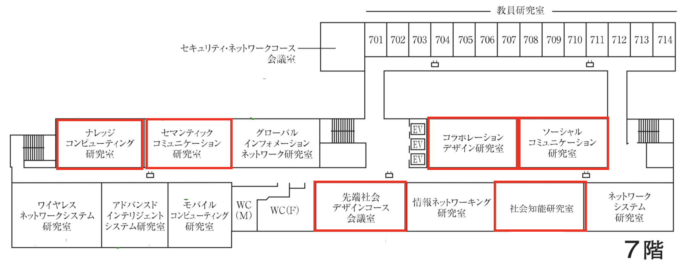

研究
先端社会デザインコース（FSDコース）の研究室、教員と研究室の場所の紹介をします。
研究室紹介
8つの研究室があります。それぞれクリエーションコアの5Fと7Fにあります。
| 來村 徳信 教授 | ナレッジコンピューティング研究室（クリエーションコア7F） |
|---|---|
| 桑原 和宏 教授 | セマンティックコミュニケーション研究室（クリエーションコア7F） 知識処理、コミュニケーション支援、クラウドソーシング、ゲーミフィケーション |
| 仲谷 善雄 教授 北村 尊義 助手 |
ソーシャルコミュニケーション研究室（クリエーションコア7F） 認知工学、防災、感性、観光、思い出工学 |
| 福本 淳一 教授 | 自然言語処理研究室（クリエーションコア5F） |
| 前田 亮 教授 | ディジタル図書館研究室（クリエーションコア5F） 情報検索、情報推薦、テキストマイニング、ディジタルヒューマニティーズ |
| 西原 陽子 准教授 | 対話デザイン研究室（クリエーションコア5F） 情報抽出、情報可視化、インタラクション、コミック・アニメ、大衆文化 |
| 服部 宏充 准教授 小川 祐樹 講師 |
コラボレーションデザイン研究室（クリエーションコア7F） マルチエージェントシステム、人工知能、社会シミュレーション、ビッグデータ解析、機械学習 |
| 村上 陽平 准教授 | 社会知能研究室（クリエーションコア7F） サービスコンピューティング、Webサービス、集合知、異文化コラボレーション、デザイン学 |
教員の紹介
教授5名、准教授3名、講師1名、助手1名の計10名です
 |
 |
|||
 |
 |
 |
研究室の場所
研究室はクリエーションコアの5Fと7Fにそれぞれあります。コースの会議室は7Fにあります。

